<title>All in 1 Drone Command</title>
<meta name="description" content="Case study by Meridian Interface: one console for drone light shows, site surveys and overnight security, with live aircraft health.">
<link rel="preconnect" href="https://fonts.googleapis.com">
<link rel="preconnect" href="https://fonts.gstatic.com" crossorigin>
<link rel="stylesheet" href="https://fonts.googleapis.com/css2?family=IBM+Plex+Sans+Condensed:wght@500;600;700&family=IBM+Plex+Sans:wght@400;500;600&family=IBM+Plex+Mono:wght@500&display=swap">
<style>
  :root {
    --ground: #f4f6f9; --surface: #ffffff; --ink: #101726; --ink-2: #4a5468; --ink-3: #7c879b; --line: #dde2ea;
    --show: #5b5bd6; --survey: #c2410c; --patrol: #0d8a80; --health: #b91c1c; --ok: #15803d;
    --night: #0b0f17; --night-ink: #e8ecf4;
    --display: 'IBM Plex Sans Condensed', 'Arial Narrow', system-ui, sans-serif;
    --body: 'IBM Plex Sans', system-ui, -apple-system, 'Segoe UI', sans-serif;
    --mono: 'IBM Plex Mono', ui-monospace, 'SFMono-Regular', Menlo, monospace;
  }
  @media (prefers-color-scheme: dark) {
    :root:not([data-theme="light"]) {
      color-scheme: dark;
      --ground: #0d1119; --surface: #141a25; --ink: #e8ecf4; --ink-2: #aab3c3; --ink-3: #7d889b; --line: #252d3b;
      --show: #8b8bff; --survey: #fb923c; --patrol: #2dd4bf; --health: #f87171; --ok: #4ade80;
    }
  }
  :root[data-theme="dark"] {
    color-scheme: dark;
    --ground: #0d1119; --surface: #141a25; --ink: #e8ecf4; --ink-2: #aab3c3; --ink-3: #7d889b; --line: #252d3b;
    --show: #8b8bff; --survey: #fb923c; --patrol: #2dd4bf; --health: #f87171; --ok: #4ade80;
  }
  * { box-sizing: border-box; }
  body { background: var(--ground); color: var(--ink); font: 400 17px/1.65 var(--body); margin: 0; }
  .wrap { max-width: 1120px; margin: 0 auto; padding-inline: clamp(16px, 4vw, 40px); }
  .col { max-width: 680px; }
  a { color: inherit; }
  h1, h2, h3 { font-family: var(--display); font-weight: 700; letter-spacing: -0.01em; text-wrap: balance; margin: 0; }
  h2 { font-size: clamp(28px, 3.4vw, 38px); line-height: 1.1; }
  h3 { font-size: 22px; line-height: 1.2; font-weight: 600; }
  p { margin: 0; }
  .label { font: 500 12px/1 var(--mono); letter-spacing: 0.06em; text-transform: uppercase; color: var(--ink-3); }
  .num { font-family: var(--mono); font-variant-numeric: tabular-nums; }
  section { padding-block: clamp(48px, 7vw, 88px); }
  section + section { border-top: 1px solid var(--line); }
  img { max-width: 100%; height: auto; display: block; }

  /* Hero: the night sky the product is built around */
  .hero { background: var(--night); color: var(--night-ink); padding-block: clamp(40px, 6vw, 72px) 0; overflow: hidden; }
  .hero .top { display: flex; flex-wrap: wrap; justify-content: space-between; gap: 12px 24px; align-items: baseline; }
  .hero .label { color: #8a95ab; }
  .hero h1 { margin-top: 28px; font-size: clamp(44px, 7vw, 88px); line-height: 0.95; }
  .hero .lede { margin-top: 22px; max-width: 620px; font-size: clamp(17px, 1.6vw, 20px); color: #b8c1d2; }
  .cta { display: flex; flex-wrap: wrap; gap: 12px; margin-top: 30px; }
  .btn { display: inline-flex; align-items: center; gap: 8px; height: 46px; padding: 0 20px; border-radius: 10px; font: 600 15px/1 var(--body); text-decoration: none; transition: transform .15s ease, background .15s ease; }
  .btn:focus-visible { outline: 2px solid var(--show); outline-offset: 3px; }
  .btn.primary { background: #fff; color: #0b0f17; }
  .btn.ghost { border: 1px solid rgba(255,255,255,.28); color: #fff; }
  .btn:hover { transform: translateY(-1px); }
  .hero figure { margin: clamp(36px, 5vw, 56px) 0 0; }
  .hero figure img { border-radius: 14px 14px 0 0; box-shadow: 0 -20px 80px rgba(91,91,214,.18); }

  /* Flight data strip: real numbers from the build */
  .data { display: grid; grid-template-columns: repeat(auto-fit, minmax(170px, 1fr)); gap: 1px; background: var(--line); border: 1px solid var(--line); border-radius: 12px; overflow: hidden; margin-top: 28px; }
  .data div { background: var(--surface); padding: 18px 18px 16px; }
  .data .v { font: 600 30px/1 var(--display); }
  .data .k { margin-top: 8px; font-size: 13px; line-height: 1.4; color: var(--ink-2); }

  .intro { display: grid; grid-template-columns: minmax(0, 1fr) minmax(0, 300px); gap: 40px; align-items: start; }
  .facts { font-size: 14px; display: grid; gap: 14px; }
  .facts dt { color: var(--ink-3); font: 500 12px/1 var(--mono); letter-spacing: .05em; text-transform: uppercase; }
  .facts dd { margin: 4px 0 0; color: var(--ink); }
  .stack p + p, .col p + p { margin-top: 16px; }
  .lead { font-size: 19px; color: var(--ink-2); margin-top: 16px; }

  /* Products: each in its own accent */
  .product { display: grid; grid-template-columns: minmax(0, 5fr) minmax(0, 7fr); gap: clamp(24px, 4vw, 48px); align-items: center; margin-top: 48px; }
  .product:nth-of-type(even) .shot { order: -1; }
  .product .tag { display: inline-flex; align-items: center; gap: 8px; font: 600 13px/1 var(--mono); letter-spacing: .04em; text-transform: uppercase; color: var(--accent); }
  .product .tag::before { content: ""; width: 18px; height: 3px; border-radius: 3px; background: var(--accent); }
  .product h3 { margin-top: 12px; }
  .product p { margin-top: 10px; color: var(--ink-2); font-size: 16px; }
  .product ul { margin: 14px 0 0; padding: 0; list-style: none; display: grid; gap: 6px; font-size: 15px; }
  .product li { padding-left: 16px; position: relative; }
  .product li::before { content: ""; position: absolute; left: 0; top: .72em; width: 6px; height: 6px; border-radius: 2px; background: var(--accent); opacity: .8; }
  .shot { border-radius: 12px; overflow: hidden; border: 1px solid var(--line); background: var(--surface); box-shadow: 0 18px 50px rgba(16,23,38,.10); }

  /* Health: the test table */
  .table-wrap { overflow-x: auto; margin-top: 24px; border: 1px solid var(--line); border-radius: 12px; background: var(--surface); }
  table { width: 100%; border-collapse: collapse; font-size: 15px; min-width: 560px; }
  th, td { text-align: left; padding: 12px 16px; border-bottom: 1px solid var(--line); vertical-align: top; }
  th { font: 500 12px/1.2 var(--mono); letter-spacing: .05em; text-transform: uppercase; color: var(--ink-3); }
  tr:last-child td { border-bottom: 0; }
  .pill { display: inline-block; padding: 2px 9px; border-radius: 999px; font-size: 13px; font-weight: 500; }
  .pill.ok { color: var(--ok); background: color-mix(in srgb, var(--ok) 12%, transparent); }
  .pill.bad { color: var(--health); background: color-mix(in srgb, var(--health) 12%, transparent); }

  /* Before / after */
  .ba { display: grid; grid-template-columns: 1fr 1fr; gap: 16px; margin-top: 24px; }
  .ba figure { margin: 0; }
  .ba figcaption { margin-top: 8px; font-size: 14px; color: var(--ink-2); }
  .ba figcaption b { font-family: var(--mono); font-weight: 500; font-size: 12px; letter-spacing: .05em; text-transform: uppercase; color: var(--ink-3); margin-right: 6px; }

  .trust { display: grid; grid-template-columns: repeat(auto-fit, minmax(240px, 1fr)); gap: 28px 36px; margin-top: 32px; }
  .trust h3 { font-size: 19px; }
  .trust p { margin-top: 8px; color: var(--ink-2); font-size: 15px; }
  .trust code { font: 500 13px var(--mono); }

  .gallery { display: grid; grid-template-columns: repeat(auto-fit, minmax(300px, 1fr)); gap: 16px; margin-top: 28px; }
  .gallery figure { margin: 0; }
  .gallery figcaption { margin-top: 8px; font-size: 14px; color: var(--ink-2); }

  .deliver { display: grid; grid-template-columns: repeat(auto-fit, minmax(220px, 1fr)); gap: 12px 32px; margin-top: 24px; padding: 0; list-style: none; font-size: 15px; }
  .deliver li { border-top: 2px solid var(--ink); padding-top: 10px; }
  .deliver span { display: block; color: var(--ink-2); font-size: 14px; margin-top: 4px; }

  .closing { background: var(--night); color: var(--night-ink); border-radius: 18px; padding: clamp(28px, 5vw, 48px); display: grid; gap: 16px; }
  .closing p { color: #b8c1d2; max-width: 620px; }
  .contact { font: 500 14px var(--mono); color: #8a95ab; }

  @media (max-width: 820px) {
    .intro, .product { grid-template-columns: 1fr; }
    .product:nth-of-type(even) .shot { order: 0; }
    .ba { grid-template-columns: 1fr; }
  }
  @media (prefers-reduced-motion: reduce) { .btn { transition: none; } .btn:hover { transform: none; } }
</style>

<header class="hero">
  <div class="wrap">
    <div class="top">
      <span class="label">Meridian Interface · Case study</span>
      <span class="label">Client: All in 1 Events · 2026</span>
    </div>
    <h1>All in 1<br>Drone Command</h1>
    <p class="lede">One console for every drone job at an event: a light show for the crowd, a survey of the grounds before the build, security patrols overnight, and a health check on every aircraft. It runs in a browser on a laptop, tablet or phone, and it flies real aircraft.</p>
    <div class="cta">
      <a class="btn primary" href="https://allin1events.com/drone/?tour" target="_blank" rel="noopener">Try the live demo</a>
      <a class="btn ghost" href="https://www.meridianinterface.com" target="_blank" rel="noopener">Start a project</a>
    </div>
    <figure>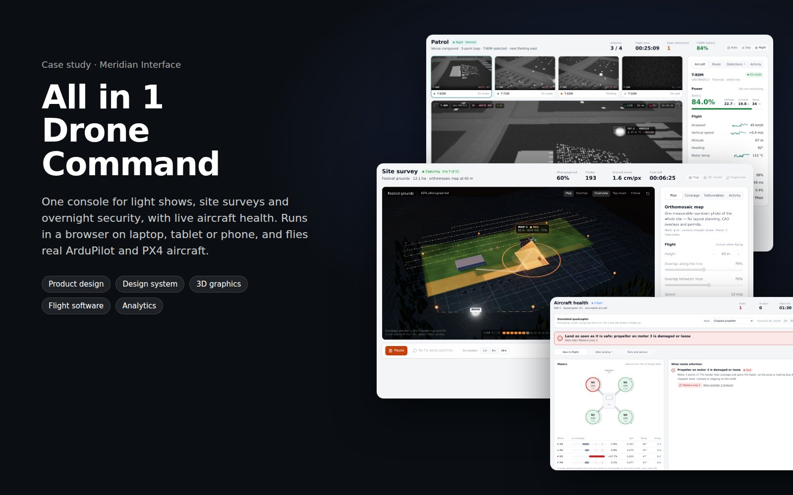</figure>
  </div>
</header>

<main>
  <section class="wrap">
    <div class="intro">
      <div class="stack">
        <span class="label">The brief</span>
        <h2 style="margin-top:14px">Three drone businesses, one crew, one screen</h2>
        <p class="lead">All in 1 Events flies drones three ways: choreographed light shows, mapping venues before the build, and overnight security. Each job had its own software, its own habits and no shared record of what flew.</p>
        <p style="margin-top:16px">The ask was one console the crew could learn once, a client could watch without being alarmed, and an insurer could trust afterwards. It had to run on whatever device was at hand, including an iPhone at the edge of a field with no signal.</p>
      </div>
      <dl class="facts">
        <div><dt>Role</dt><dd>Product design, design system, 3D graphics, front end and the flight software underneath</dd></div>
        <div><dt>Platform</dt><dd>Installable web app: laptop, tablet, phone; works offline</dd></div>
        <div><dt>Aircraft</dt><dd>ArduPilot and PX4 over MAVLink: Bluetooth, USB radio or network</dd></div>
        <div><dt>Stack</dt><dd>React, TypeScript, Three.js, Tailwind; Python bridge; Supabase</dd></div>
      </dl>
    </div>
    <div class="data" aria-label="Numbers from the build">
      <div><div class="v num">100–500</div><div class="k">aircraft rendered live in the show conductor</div></div>
      <div><div class="v num">9</div><div class="k">automated test suites on every change</div></div>
      <div><div class="v num">+17.4%</div><div class="k">motor 3 caught working harder, on real ArduCopter firmware</div></div>
      <div><div class="v num">SHA-256</div><div class="k">chain on every recorded event, checked by the database</div></div>
    </div>
  </section>

  <section class="wrap">
    <span class="label">What we built</span>
    <h2 style="margin-top:14px">Three jobs, each with its own instrument</h2>
    <p class="lead col">Every screen has the same shape: a headline with four numbers, the stage, one action bar, one inspector. Each product keeps its own accent colour so the crew always knows where they are.</p>

    <article class="product" style="--accent: var(--show)">
      <div>
        <span class="tag">Light show</span>
        <h3>Conduct a show from front of house</h3>
        <p>The stage renders like the night sky the audience will see: bloomed LED halos, light trails through formation changes, reflections on the venue floor.</p>
        <ul>
          <li>Pre-flight gates (timecode lock, wind, RTK, battery) hold the arm button</li>
          <li>One-button abort: lights out, controlled descent for every aircraft</li>
          <li>Exports the choreography to the show-control stack</li>
        </ul>
      </div>
      <div class="shot">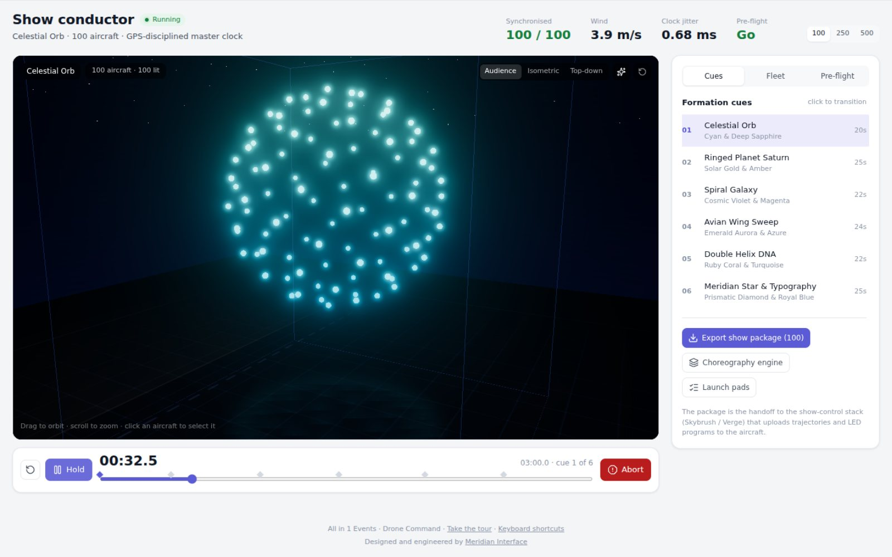</div>
    </article>

    <article class="product" style="--accent: var(--survey)">
      <div>
        <span class="tag">Site survey</span>
        <h3>Watch the map develop in flight</h3>
        <p>Pick a map, a 3D model or an inspection orbit, and the camera maths sets height, line spacing and flight time. The venue turns from blueprint into aerial photo under the aircraft.</p>
        <ul>
          <li>Coverage checked before leaving the venue, not back at the office</li>
          <li>Re-fly weak patches in minutes</li>
          <li>Mission upload to the aircraft, and a package for the processing software</li>
        </ul>
      </div>
      <div class="shot">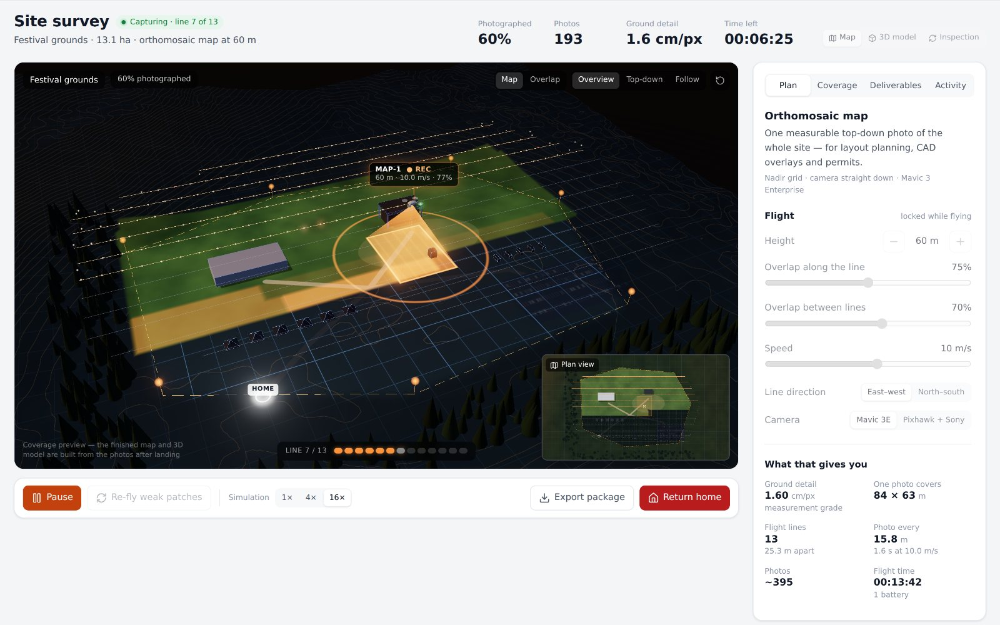</div>
    </article>

    <article class="product" style="--accent: var(--patrol)">
      <div>
        <span class="tag">Security patrol</span>
        <h3>See the venue at night</h3>
        <p>Four aircraft on a patrol loop. The camera plays real drone footage over San Francisco, Los Angeles, New York and mountain ranges, with thermal and night-vision modes applied on top; a rendered 3D city with traffic, people and thermal signatures stands in when the footage can't load.</p>
        <ul>
          <li>Night protocol switches every camera to thermal</li>
          <li>Gimbal, zoom, spotlight and photos on the real aircraft</li>
          <li>Detections queue for the security team</li>
        </ul>
      </div>
      <div class="shot">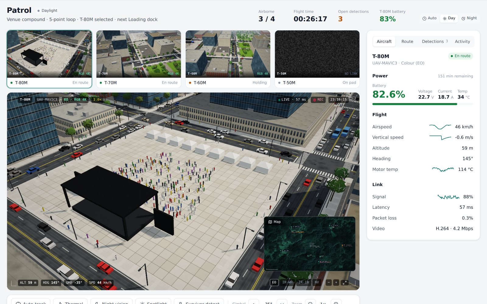</div>
    </article>
  </section>

  <section class="wrap" style="--accent: var(--health)">
    <span class="label">Aircraft health</span>
    <h2 style="margin-top:14px">It names the part that is failing</h2>
    <div class="col">
      <p class="lead">A flight controller keeps an aircraft level by working a weak corner harder. Reading that from the autopilot's own telemetry tells a chipped propeller (works harder, spins faster) from a worn motor (works harder, draws more current) from a twisted arm (one spin direction works harder all flight).</p>
      <p style="margin-top:16px">We built the ArduPilot flight software from source and flew it through the real bridge and the real app. The same code that runs on a Pixhawk caught a motor we had weakened, and flew a healthy aircraft without a false alarm.</p>
    </div>
    <div class="table-wrap">
      <table>
        <thead><tr><th>ArduCopter 4.5.7</th><th>In flight</th><th>After landing</th></tr></thead>
        <tbody>
          <tr><td>Healthy aircraft</td><td><span class="pill ok">All systems normal</span> motors within <span class="num">0.1%</span></td><td><span class="pill ok">Fit to fly</span></td></tr>
          <tr><td>Motor 3 at <span class="num">80%</span> thrust</td><td><span class="pill bad">Land as soon as it is safe</span> motor 3 <span class="num">+17.4%</span></td><td><span class="pill bad">Ground it</span> inspect prop and motor 3</td></tr>
        </tbody>
      </table>
    </div>
    <div class="shot" style="margin-top:24px">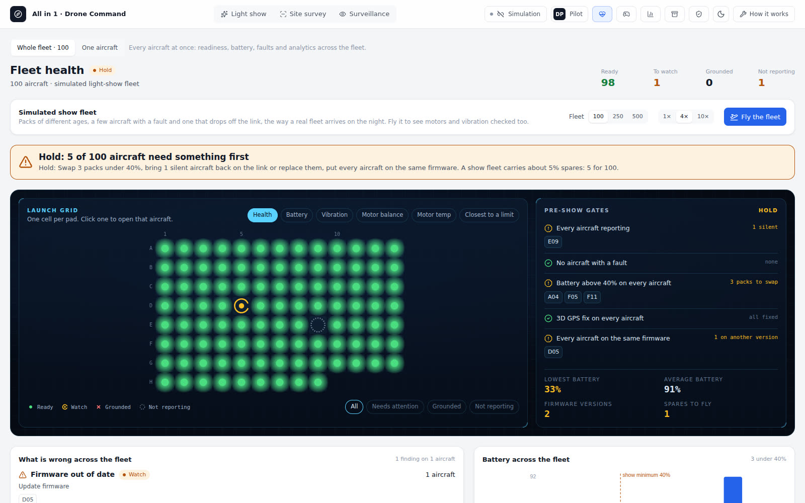</div>
  </section>

  <section class="wrap">
    <span class="label">Craft</span>
    <h2 style="margin-top:14px">Redesigned, not reskinned</h2>
    <p class="lead col">The first version worked but looked like a demo. The redesign put the product on one design system: one accent per product, status colours only for status, nothing smaller than eleven pixels, and imagery that shows the thing itself.</p>
    <div class="ba">
      <figure>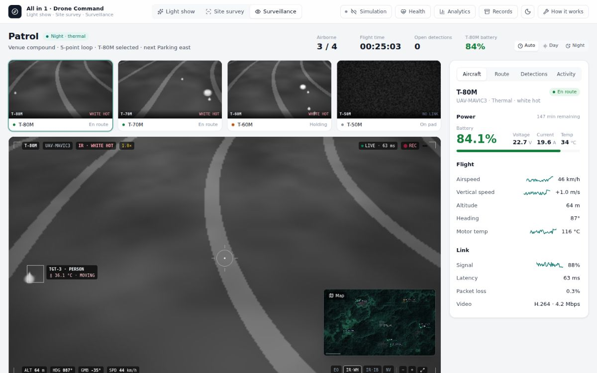<figcaption><b>Before</b>Thermal feed: noise and a road.</figcaption></figure>
      <figure>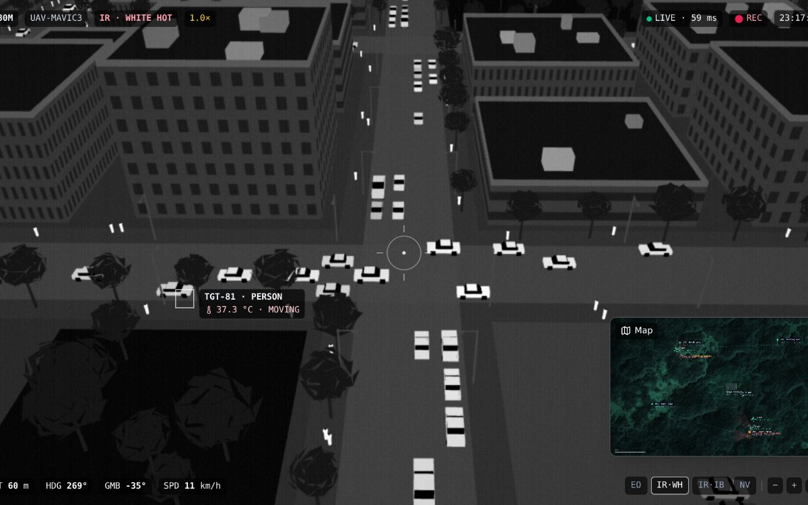<figcaption><b>After</b>A city with its own heat: engines, people, warm rooftop plant; real footage plays in the same frame.</figcaption></figure>
      <figure>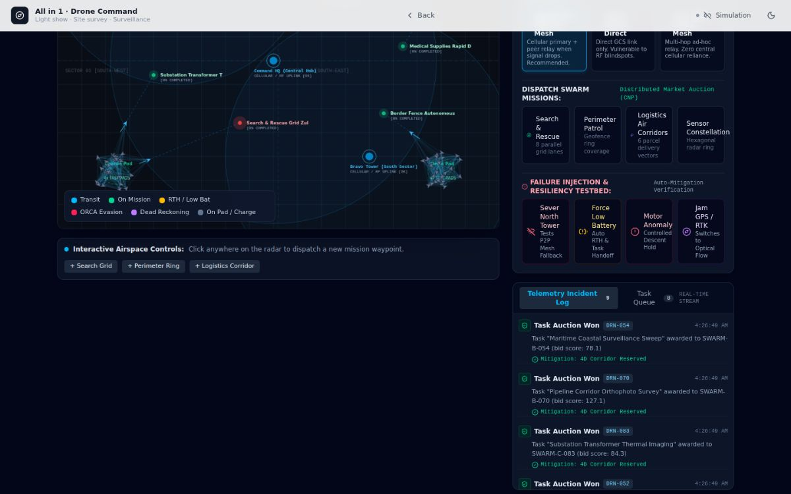<figcaption><b>Before</b>Engineering views: neon, monospace, 9 px labels.</figcaption></figure>
      <figure>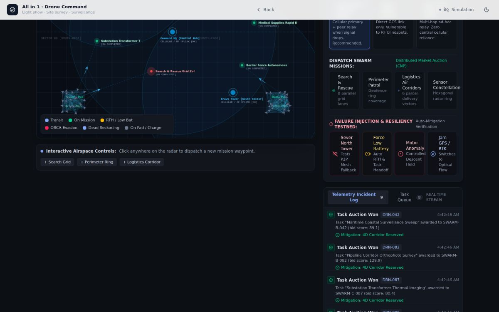<figcaption><b>After</b>Same markup, remapped onto the design system.</figcaption></figure>
    </div>
  </section>

  <section class="wrap">
    <span class="label">Trust</span>
    <h2 style="margin-top:14px">Built for the people who read it afterwards</h2>
    <div class="trust">
      <div><h3>A record that can't be quietly edited</h3><p>Every event is chained to the one before with SHA-256. Records says <em>intact</em>, or names the first entry changed after the flight.</p></div>
      <div><h3>Who gave each command</h3><p>Pilot in command, visual observer or client (view only). Buttons follow the role, and the name is on every event.</p></div>
      <div><h3>A copy nobody on site can wipe</h3><p>The company server re-checks the chain and refuses any edit or deletion, even from its owner. Tested against real Postgres.</p></div>
      <div><h3>Fly from anywhere</h3><p>A relay lets a phone on LTE reach an aircraft behind carrier NAT, with a watch-only link for clients.</p></div>
    </div>
  </section>

  <section class="wrap">
    <span class="label">Screens</span>
    <h2 style="margin-top:14px">Behind every flight</h2>
    <div class="gallery">
      <figure>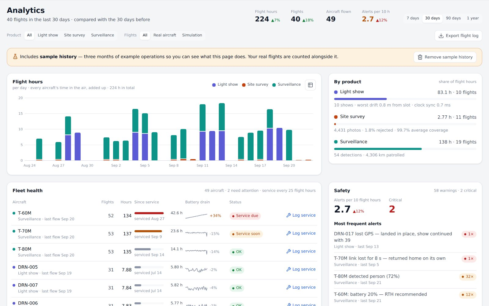<figcaption>Analytics: hours by product, service due, a battery wearing out.</figcaption></figure>
      <figure>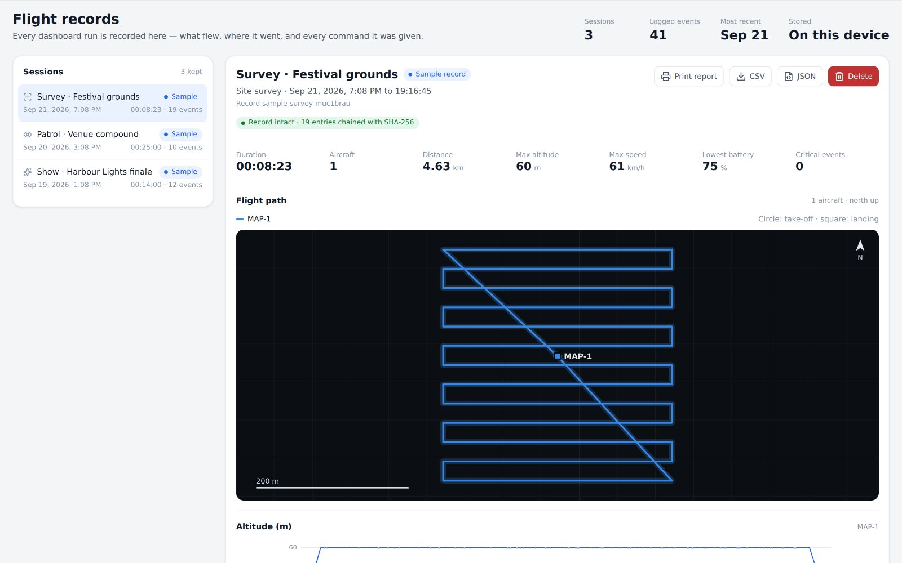<figcaption>Records: the path, the telemetry and every command, verified.</figcaption></figure>
    </div>
    <ul class="deliver">
      <li>Product and interaction design<span>Eight screens, a guided tour, phone to desktop</span></li>
      <li>Design system<span>Tokens, light and dark, validated chart palette</span></li>
      <li>3D and imagery<span>Show stage, survey stage, synthetic thermal camera</span></li>
      <li>Flight software<span>MAVLink codec, bridge, relay, health analysis, server schema</span></li>
    </ul>
  </section>

  <section class="wrap">
    <div class="closing">
      <span class="label" style="color:#8a95ab">Meridian Interface</span>
      <h2>Have an operation that deserves a better screen?</h2>
      <p>We design and build the interfaces serious operations run on: dashboards, apps and the systems underneath them.</p>
      <div class="cta" style="margin-top:4px">
        <a class="btn primary" href="https://www.meridianinterface.com" target="_blank" rel="noopener">Start a project</a>
        <a class="btn ghost" href="https://allin1events.com/drone/?tour" target="_blank" rel="noopener">Try the live demo</a>
      </div>
      <div class="contact">otis@meridianinterface.com · www.meridianinterface.com</div>
    </div>
  </section>
</main>
